The real Yaki Soul case from Battle's deck as an immersive scroll scene: depth layers that move with your mouse (or phone tilt), four chapters scrubbed by scroll, the lights going out for the challenge and the grill igniting for the solution, and the numbers climbing as you scroll. Then the collaborations, the deck slide, a video slot and the Work index.
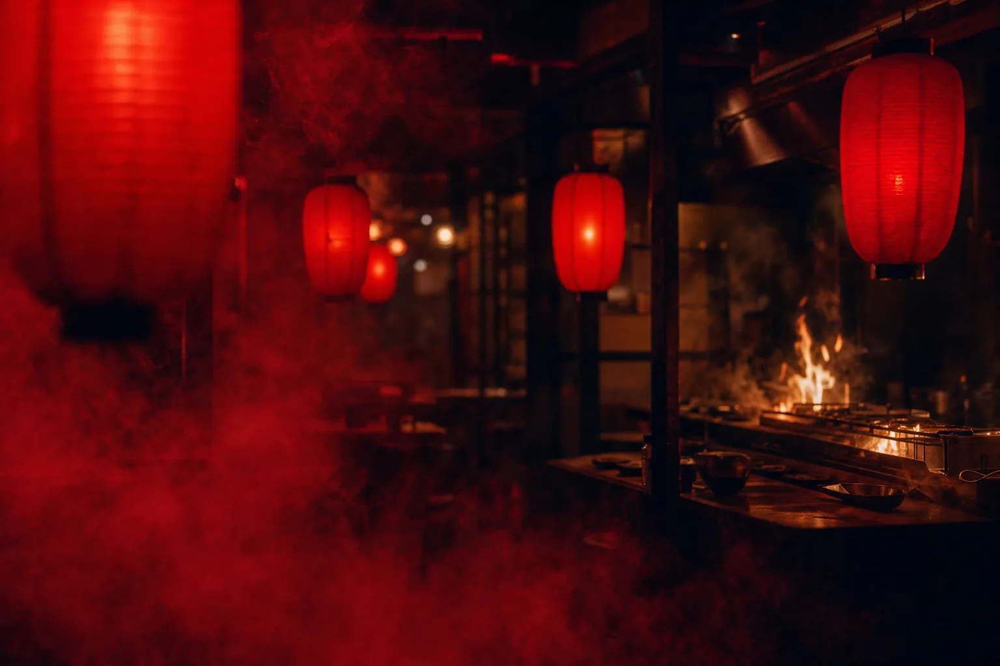
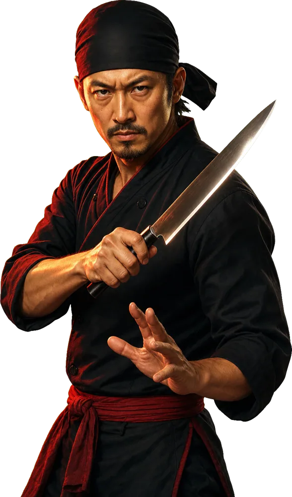
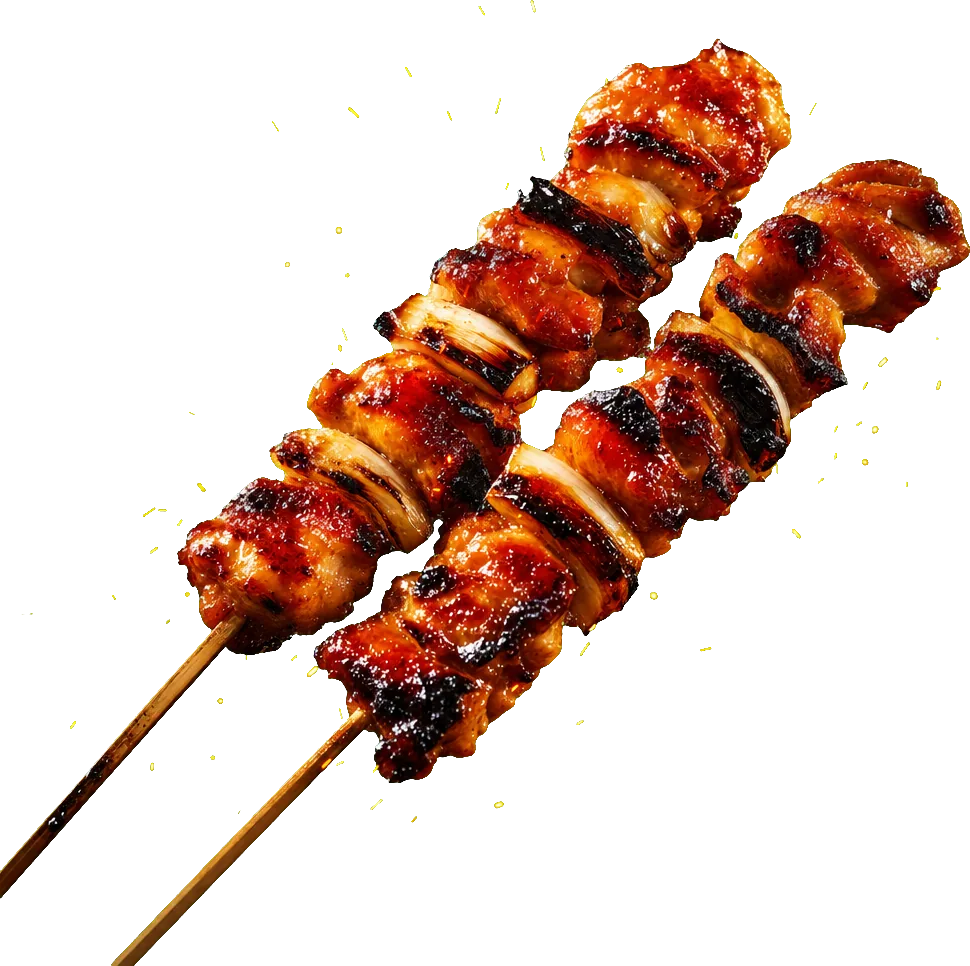
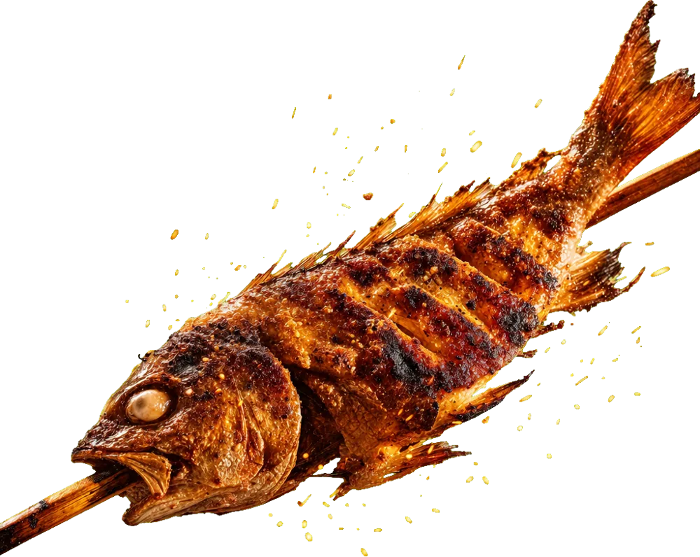
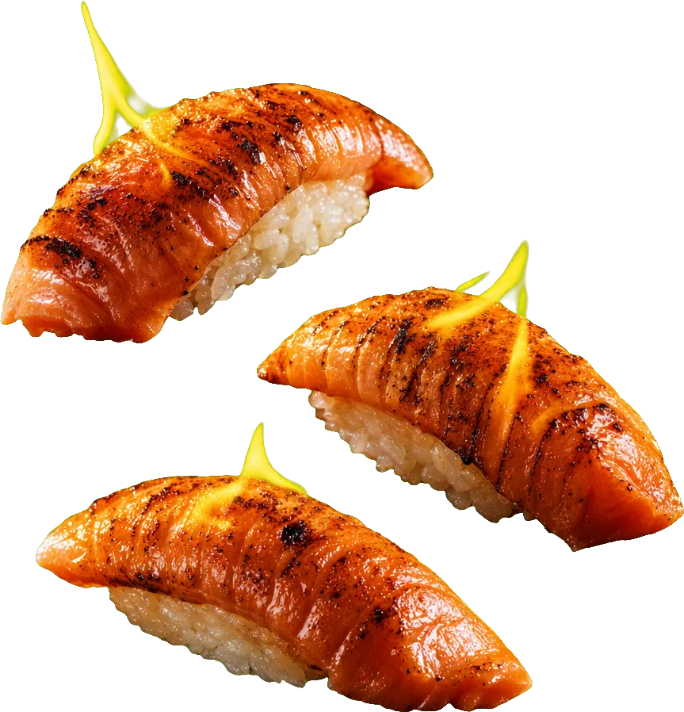
Yaki Soul entered a highly competitive KL nightlife and dining market dominated by established Changkat F&Bs. Despite a unique product, the outlet sat away from the main street: limited walk-in traffic, low brand awareness, and nothing to separate it from countless other izakayas in the city.
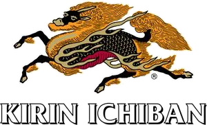
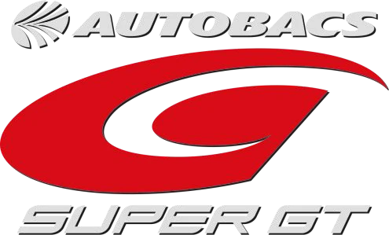
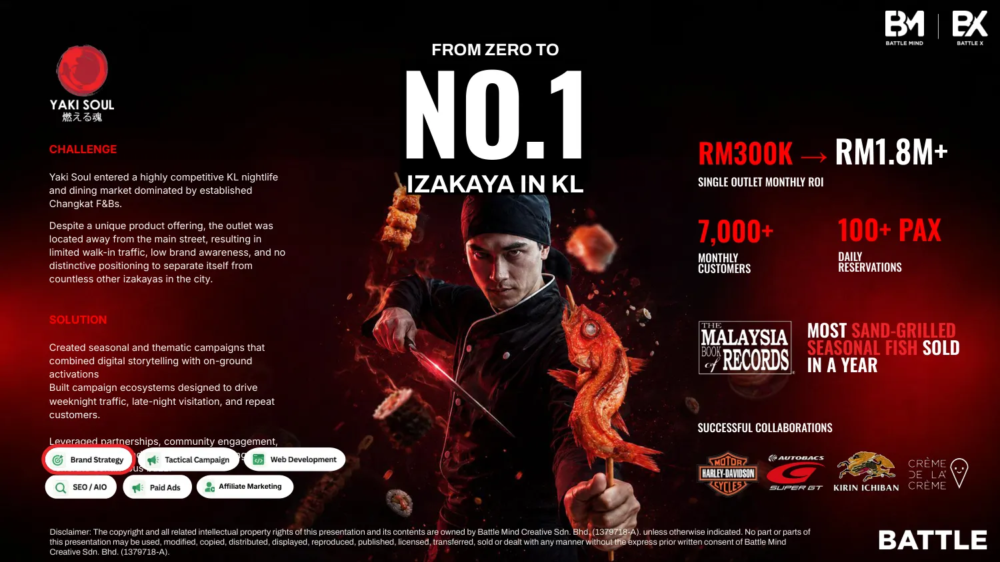
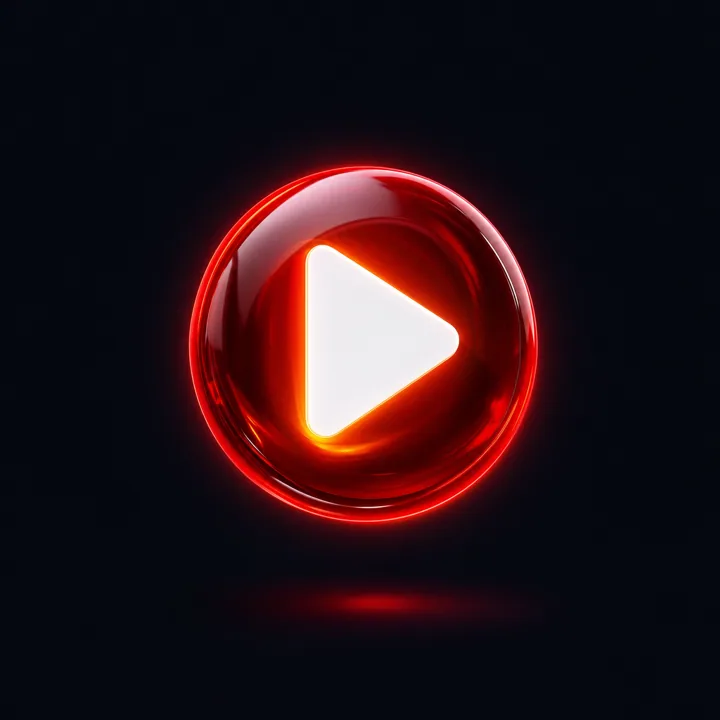
Founder interview · 60–90 second video slot